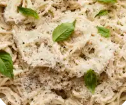
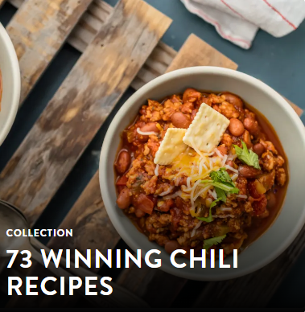
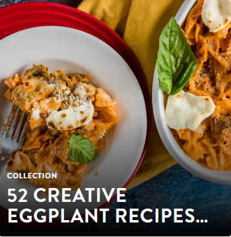
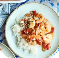

Persian Tahchin

Ingredients
For the Rice Layer:
- 3 cups basmati rice
- 4 egg yolks
- 1 cup plain yogurt
- 1/4 cup vegetable oil or melted butter
- 1/4 teaspoon ground saffron (dissolved in 3 tablespoons hot water)
- Salt to taste
For the Filling:
- 1 1/2 cups cooked chicken, lamb, or beef (shredded) OR sautéed vegetables
- 1 onion, finely chopped
- 1/2 cup barberries or cranberries (optional, for tartness)
- 1/2 teaspoon turmeric
- 1/4 teaspoon cinnamon (optional)
- Salt and pepper to taste
- 2 tablespoons vegetable oil
Garnish:
- Chopped pistachios
- Chopped almonds (optional)
Creamy Alfredo Pasta
Ingredients
For the Pasta:
- 250g (9 oz) fettuccine or spaghetti pasta
- Salt (for boiling the pasta)
For the Alfredo Sauce:
- 2 tablespoons unsalted butter
- 3 cloves garlic, minced
- 1 cup heavy cream (or fresh cream)
- 1/4 teaspoon cinnamon (optional)
- Salt and pepper to taste
- 2 tablespoons vegetable oil
Garnish:
- Chopped pistachios
- Chopped almonds (optional)
Butter Chicken
Short Description:
Chili is a hearty stew made with ground meat, beans, tomatoes, and a variety of spices. It's often garnished with shredded cheese, crackers, and fresh herbs. This dish is known for its rich flavor and warmth, making it a popular comfort food, especially in colder weather. The image is part of a collection titled "73 Winning Chili Recipes," which suggests a variety of acclaimed chili recipes recognized for their taste and quality.
Paneer Butter Masala
Short Description:
Chili is a hearty stew made with ground meat, beans, tomatoes, and a variety of spices. It's often garnished with shredded cheese, crackers, and fresh herbs. This dish is known for its rich flavor and warmth, making it a popular comfort food, especially in colder weather. The image is part of a collection titled "73 Winning Chili Recipes," which suggests a variety of acclaimed chili recipes recognized for their taste and quality.
Garlic Bread with Cheese
Short Description:
Chili is a hearty stew made with ground meat, beans, tomatoes, and a variety of spices. It's often garnished with shredded cheese, crackers, and fresh herbs. This dish is known for its rich flavor and warmth, making it a popular comfort food, especially in colder weather. The image is part of a collection titled "73 Winning Chili Recipes," which suggests a variety of acclaimed chili recipes recognized for their taste and quality.
Bruschetta with Tomato
Short Description:
Chili is a hearty stew made with ground meat, beans, tomatoes, and a variety of spices. It's often garnished with shredded cheese, crackers, and fresh herbs. This dish is known for its rich flavor and warmth, making it a popular comfort food, especially in colder weather. The image is part of a collection titled "73 Winning Chili Recipes," which suggests a variety of acclaimed chili recipes recognized for their taste and quality.